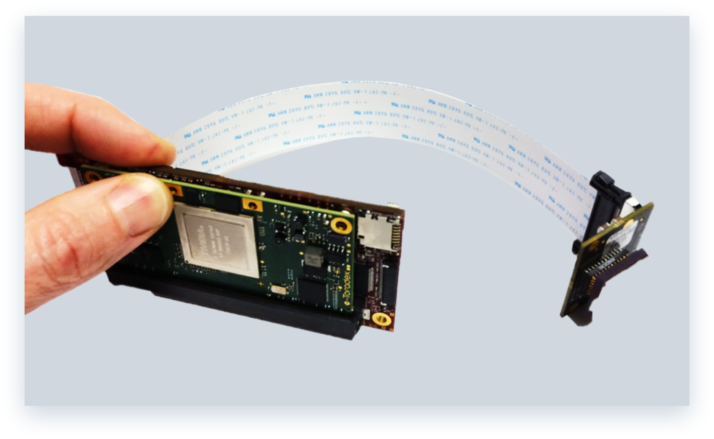

SHARK


The Coherix SHARK platform is a high performance embedded hardware solution that leverages tight integration with
Coherix i-Cite software for rapid product development. i-Cite software provides a flexible and rapid 2D and 3D
machine vision application development solution for many years. The combination of the SHARK hardware platform and
i-Cite software significantly reduces time and effort significantly for 3D sensor development. A single SHARK
platform can be configured for up to eight high speed, high resolution CMOSIS CMV imagers, two DLP light
projectors and eight LED/laser projectors. Internal FPGA processing and high speed x4 PCIe connection of image
data into the Intel or ARM processor memory provides for low latency and flexible image processing all in a
compact and low-power package.
